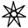
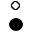
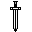
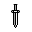

Alesia Alesia is one of the six Primary Gods.
Alesia Alesia is one of the six Primary Gods. Anashina Anashina is The Protector of Nature, The Hunteress, Protector of the Fay.
Anashina Anashina is The Protector of Nature, The Hunteress, Protector of the Fay. Asteria Asteria is the Queen of the North, the Mother of Cold, the Ice Lady.
Asteria Asteria is the Queen of the North, the Mother of Cold, the Ice Lady.- Cal Amae Cal Amae is the Valiant Paladin, the ultimate Knight of Goodness.
 Elaari The Goddess of Passion & Arts is strong willed, intense and passionate about everything she does.
Elaari The Goddess of Passion & Arts is strong willed, intense and passionate about everything she does. Elesi Elesi is the Goddess of Fertility, Creation and Art.
Elesi Elesi is the Goddess of Fertility, Creation and Art.
Fal Munir The Sage and Oracle among the Gods are worshipped by those seeking truth through knowledge and contemplation.- Fenimaal BODY : 5 (Divine tier - transcends mortal limits) MIND : 5 (Divine tier - infinite knowledge) SPIRIT : 10 (Supreme - inventor of spell magick) Fenimaal has mastery of …
 Fionella Fionella finds magick in the nature.
Fionella Fionella finds magick in the nature. Fooradur The God of Diplomacy is half human, half Dwarf.
Fooradur The God of Diplomacy is half human, half Dwarf. Gwendyll Gwendyll is the Queen of the Gods and The Champion of Order and the Family.
Gwendyll Gwendyll is the Queen of the Gods and The Champion of Order and the Family. Ielina Ielina is one of the six Primary Gods.
Ielina Ielina is one of the six Primary Gods.- Ikalio Ikalio is one of the six Primary Gods.
 Ish Nakil The gender of Ish Nakil is unknown.
Ish Nakil The gender of Ish Nakil is unknown.- Juba The Entertainer, Jester, Trubadour and Bard.
 Kraagh Kraagh is the Recycler of Souls.
Kraagh Kraagh is the Recycler of Souls.
Liandra Daughter of Ielina and creater of hopes and dreams, Liandra is worshopped by artists from all walks of life. MacGillan MacGillan is the King of the Gods and The Ultimate Leader.
MacGillan MacGillan is the King of the Gods and The Ultimate Leader.- Magick Magick in Amar RPG is a powerful and complex force.
 Mailatroz Mailatroz is the God of merchants and traders.
Mailatroz Mailatroz is the God of merchants and traders.- Maleko Maleko is the The Monk, Martial Artist, Ninja among the Gods.
 Man Peggon Man Peggon stands tall, well above the other Gods.
Man Peggon Man Peggon stands tall, well above the other Gods. Mestronorpha Mestronorpha is evil.
Mestronorpha Mestronorpha is evil.- Moltan Moltan is the Judge among the Gods.
- Parkoan A firestorm of a God, volcanic, eruptive and passionate.
 Recolar Recolar is perhaps the most noteworthy among the lesser Gods.
Recolar Recolar is perhaps the most noteworthy among the lesser Gods.- Shalissa Shalissa is one of the six Primary Gods.

Taroc The God of War, Duels and Melee is well respected among the Gods. Time Lords Time Lords are one of the six Primary Gods.
Time Lords Time Lords are one of the six Primary Gods.
Tsankili The sneakiest and most treacherous of the Gods, Tsankili is the master of deception, distraction, of being undetected (having 60 in both Move Quietly and Hide).- Walmaer Walmaer is one of the six Primary Gods.
 Ztenasie The God of wine, food, taste and the better sides of life is the daughter of Alesia and an unknown entity.
Ztenasie The God of wine, food, taste and the better sides of life is the daughter of Alesia and an unknown entity.
The world